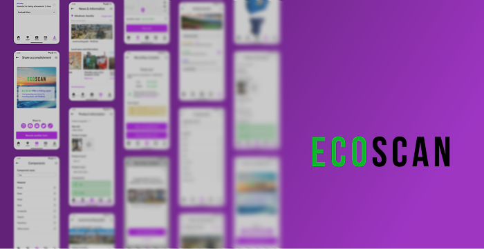
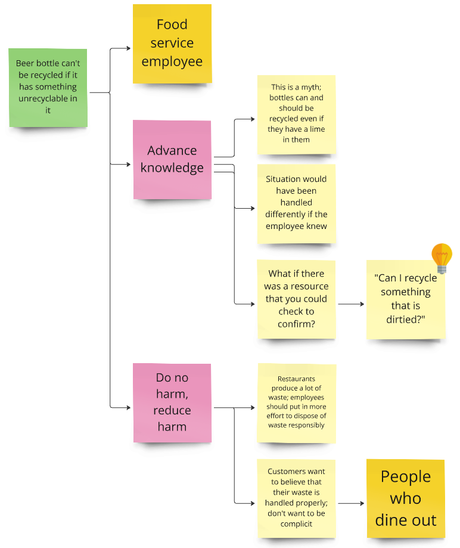
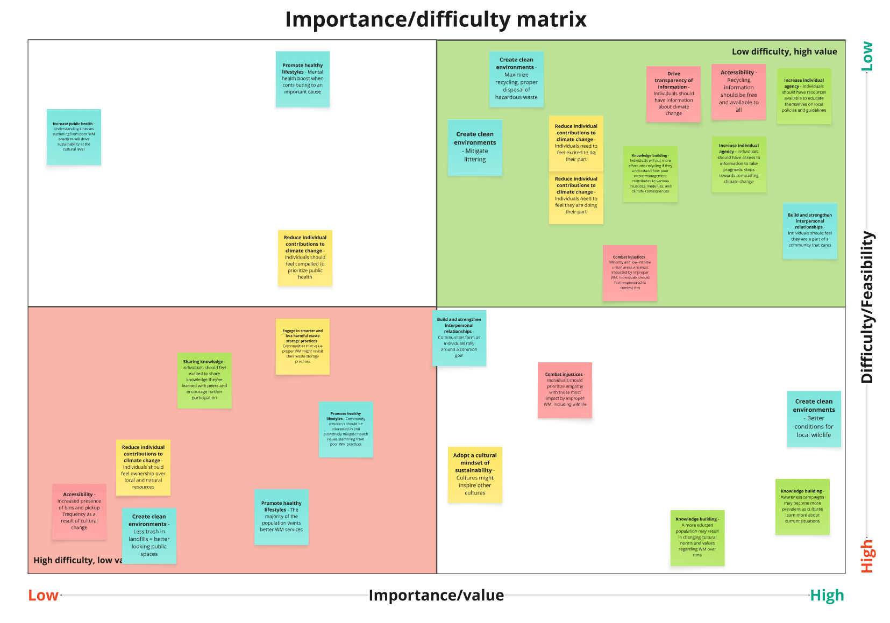
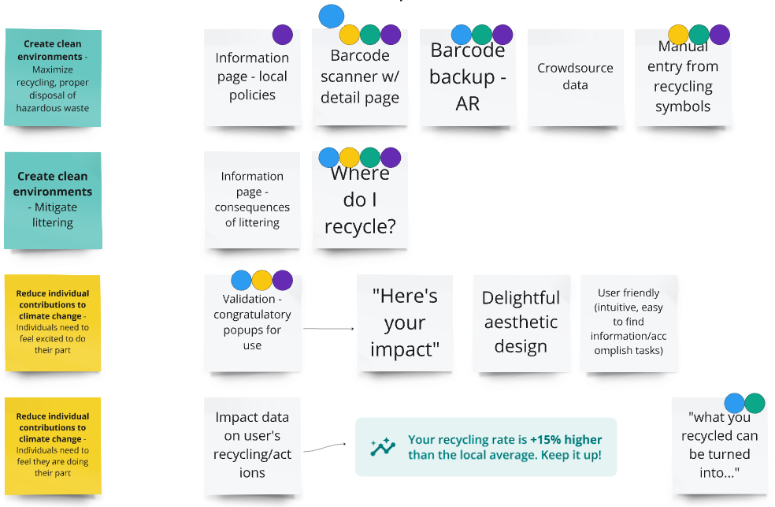
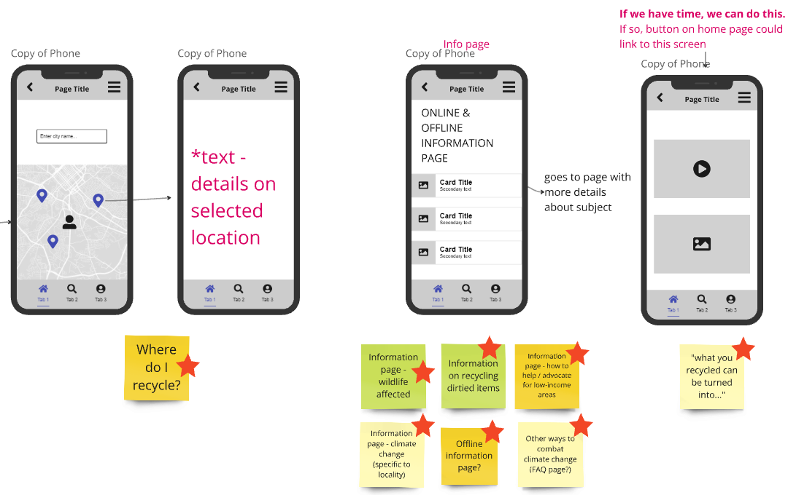
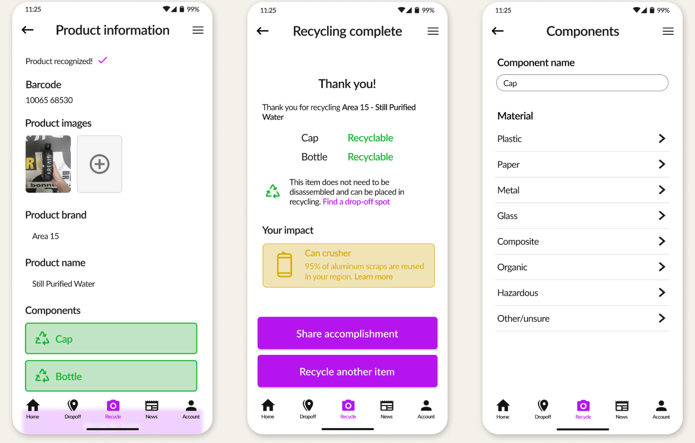
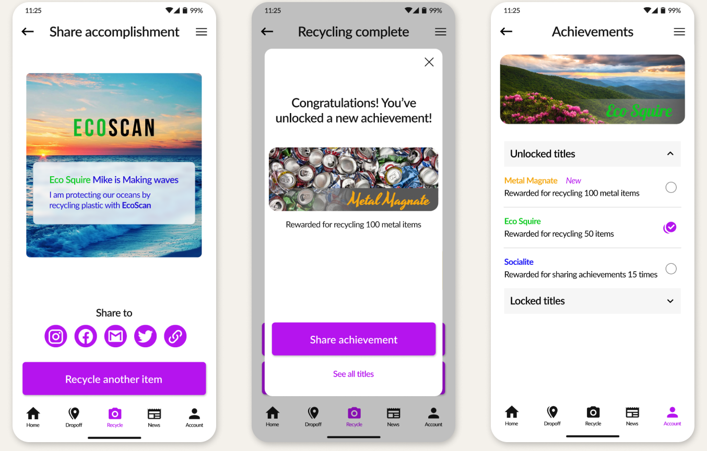
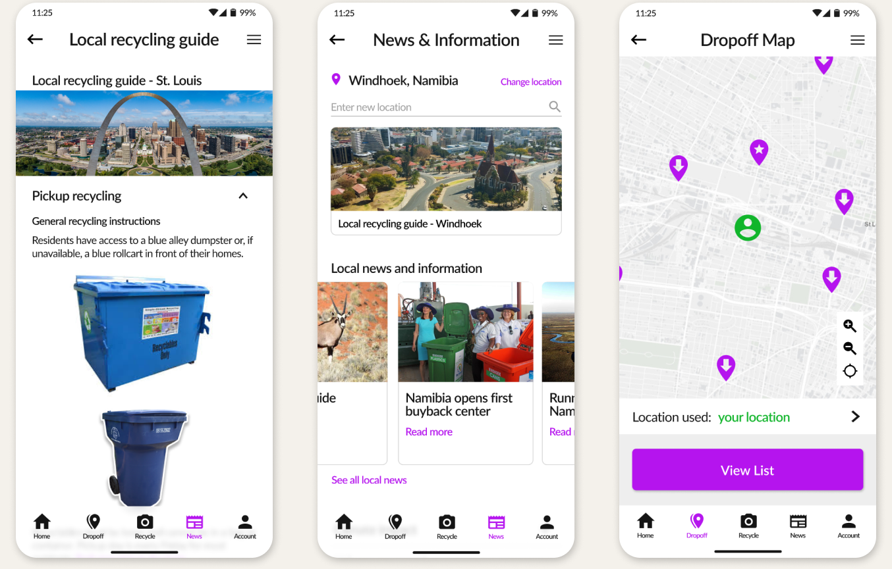

This project was completed as part of a graduate-level course on designing for social impact, where a small team of designers (myself included) from Iowa State University partnered with a student from the Namibia University of Science and Technology (NUST) to identify and address a meaningful environmental or social challenge. Through early reflexive workshopping, we recognized a shared interest in sustainable waste management and the values surrounding responsible disposal practices — an area each of us could independently research from our respective contexts.
Using the Value Sensitive Design (VSD) framework to guide our process, we explored the values, stakeholders, and beliefs that shape recycling behaviors in our respective communities. These conversations ultimately led us to design EcoScan, a mobile app concept aimed at helping people engage in more accurate and sustainable recycling practices, particularly those who want to make environmentally responsible choices but aren't sure where to begin.
To ground the problem, we began with exploratory research into global recycling practices. A clear pattern emerged: recycling rules vary widely by jurisdiction, and this information is often difficult to find or interpret. These inconsistencies contribute to widespread misconceptions about what can and cannot be recycled, creating confusion for people who want to make environmentally responsible choices. This insight signaled that the solution we designed would need to provide clear, location-specific guidance that users could trust.
The team developed an observational method called Contextual Value Mapping — a combination of naturalistic observation, contextual inquiry, and value mapping — to better understand where and when confusion occurs and how people navigate uncertainty in their waste management practices. This required some creativity in execution given a team of students with no funding: for example, I became a bit more attentive to how the waste bins were used at the restaurant I worked at (and asked a lot of questions that were probably a bit strange to unsuspecting coworkers), while my colleague spent more time with her neighbors in her apartment complex to better understand how they decided what goes into which dumpster out back. The process wasn't exactly glamorous, but it was instrumental in building an understanding of how people make decisions regarding waste management and what their underlying motivations are in doing so, which then surfaced themes that translated nicely into functional requirements for the solution.

With a broad set of potential features in hand, we used two collaborative prioritization methods to align the team on system functionality. First, we completed an Importance/Difficulty matrix to identify features with the highest impact and feasibility.

We then used dot voting to democratically select the most essential features for a first-pass prototype. This process resulted in a focused, ranked list of requirements that balances user value and technical feasibility within our time constraints as a student project.

Through this prioritization process, a few critical system features emerged:
Ideation unfolded through a series of collaborative brainstorming sessions conducted over Miro and Microsoft Teams. Because our team spanned multiple time zones and busy student schedules, asynchronous sketching and concept sharing became essential. These early sessions produced a range of low-fidelity ideas — from quick napkin sketches to simple wireframes — that helped us explore different ways the system could support accurate, sustainable recycling practices.

Once we had a few promising directions, we translated our prioritized requirements into low-fidelity workflow designs in Figma. The team then diverged to conduct brief usability sessions on the early workflows, with each designer working with three participants (twelve total) ranging from food service workers and neighbors to community activists and waste management employees. This diverse group of stakeholders provided a breadth of feedback that highlighted opportunities to refine the app's information architecture, clarify key interactions, and introduce new features to better support long-term engagement.
These insights gave us a clear path forward and the confidence to begin developing high-fidelity prototypes.
Our final concept, EcoScan, brings together the core values and requirements identified through early explorations of the problem space and the insights uncovered during user testing. The app is designed to help users build sustainable recycling habits through clear guidance, positive reinforcement, and location-specific information.

EcoScan's core feature is a step-by-step recycling wizard that helps users determine where and how to dispose of an item based on local policies. By offloading the effort needed to memorize jurisdiction-specific rules, the system reduces confusion and supports more accurate sorting.

To encourage long-term engagement and reflect the value of building meaningful habits, we incorporated a lightweight rewards system featuring "your impact" summaries and unlockable titles that users can set in-app or share to social media. These elements reinforce sustainable behaviors and make personal growth feel visible and rewarding.

EcoScan also provides clear, accessible information about local recycling policies, including what belongs in each bin and how to dispose of hazardous or oversized materials in their area. A GPS-enabled map helps users locate nearby drop-off sites, making responsible disposal more convenient.
As we finalized the designs, I created a set of lightweight prototypes to help our stakeholders visualize how the core workflows reflected the values at the heart of EcoScan. These prototypes acted as quick communication tools during final reviews, helping both the team and our stakeholders build shared understanding around the product's goals.
This project pushed me to grow in ways I didn't anticipate. It was my first experience collaborating with an international teammate on a design project. Coordinating across dramatically different time zones required patience, flexibility, and a willingness to adapt our process. Through many learned lessons and a touch of trial-by-fire, we found a rhythm that allowed us to collaborate effectively and asynchronously using the tools available to us.
Working within the VSD framework also stretched my practice beyond what I was comfortable with to that point in my career. I had to quickly learn a new methodology, translate abstract values into actionable requirements, and stay grounded in the real-world limitations of waste management systems across geographical and cultural contexts. The discovery work specifically demanded a degree of creativity I hadn't yet encountered as a designer used to working primarily with industry-established methods — from observing disposal behaviors "in the wild" (read as: "hanging out by the trash can") to conducting informal interviews on a topic most people don't think about much, I spent a lot of time on the outer limits of my comfort zone and, ultimately, expanded them to new boundaries.
Overall, the experience bolstered my ability to navigate ambiguity, collaborate across cultures, and design with intention. EcoScan certainly isn't going to solve the world's waste management problem, but it does reflect the growth I experienced as a designer learning to balance values, constraints, and user needs in a short and intensive timeline.